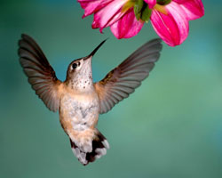

With a little luck, there's a good chance you've seen ahummingbird this summer. These miniature winged wonders areawe-inspiring for their size, speed and remarkable beauty, plustheir uncanny maneuverability. But you don't have to wait for achance sighting ? you can easily attract hummingbirds right to yourback yard by creating a simple, vibrant hummingbird garden.
Good hummingbird habitat doesn't have to be complicated. Yourfeathered friends have basic needs: food sources, water for bathing(they love flitting through the garden sprinkler), andaccommodations for perching and nest building. There are a varietyof flowers (particularly wildflowers), vines, shrubs and trees thatyou can incorporate to create a successful hummingbird retreat.Yucca, snapdragon, morning glory, mealberry and flowering crabappleare just a few of the varieties that hummingbirds enjoy.
As their rapid wings indicate, hummingbirds are exceptionallyactive, requiring a large daily intake of nectar and insects. (Theyeat half of their weight in sugar every day!) Hummingbirds areknown for their attraction to red flowers, having learned that thevivid petals often indicate robust nectar supplies. However,they'll readily dine from pink, orange, purple, yellow and evenwhite flowers of the right varieties. You can even encourage longervisits from hummingbirds by planting a mixture of plant varieties,both annual and perennial.
Keeping in mind the hummingbird's habits, you can play with anumber of options to meet both their needs and your aestheticpreferences. For starters, these little birds are protective oftheir food supply and prefer to perch where they can survey theirdomain. While males will perch on a clothesline, exposed branchesor any spot with a good view, females and their young keep to theshade and security offered by thicker foliage. A mix of shrubs,flowers and trees will make a great home for your birds and apleasing garden for you!
You won't just love hummingbirds for their looks alone: theymake great partners for any gardener. In flying from flower toflower, they pollinate the plants. And their taste for smallinsects includes garden pests such as aphids and gnats.
You can learn more about designing a hummingbird garden in thise-handbook from MotherEarth News. It has extensive information about hummingbirdspecies, where they live and what they need, plus suggestions forspecific plants that will provide ideal habitat.
Share your hummingbird attracting tips by posting a commentbelow.
|
 A female Rufous hummingbird enjoys sweet sustenance. |
|
|